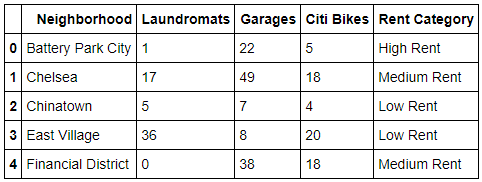

Many machine learning problems take the form of predicting a certain outcome or classification based on a set of other known factors. In healthcare, a patient's medical history and vitals can be used to predict certain diagnoses. In astronomy, the mass, the composition, and the orbital shape and frequency of a celestial object can be used to determine whether or not it is an exoplanet.
In this project we set out to see if machine learning can be used to predict the rent category (high, medium, low) of a 2-bedroom apartment in New York City.
Legally operating businesses in the 5 boroughs: https://opendata.cityofnewyork.us/
-Laundromats
-Parking garages
Citi Bikes: https://feeds.citibikenyc.com/stations/stations.json
Median 2-BR rent 2010-2019 in the 5 boroughs: https://streeteasy.com/blog/data-dashboard/
1. We loaded our raw data into several pandas DataFrames, one for each separate feature. We found that there were many repeat coordinates - over time one business might close and another may take over at the same location. We used pandas to quickly and easily drop all rows containing duplicate coordinates.
2. The features we selected (Citi Bike, garages, laundromats) exist as coordinates or boroughs, not specified by neighborhood. Hence we needed to find a way to reverse geocode the coordinates to provide a specific neighborhood. MapBox API was our answer - it provided both neighborhood and borough level information for each set of coordinates we fed to it. Ultimately, we decided to keep only those points which fell into Manhattan. Best to start the project with a small subset of NYC first, then to start adding new features and boroughs once we know the concept works.
Furthermore, it helped us to identify several sets of coordinates in our data that did not actually exist in NYC, hence this contributed to our cleaning of the data as well.
3. Finally, for each individual feature (Citi Bike, garages, laundromats) we had obtained the specific neighborhood it was located in. From there it was as simple as calling the value_counts() method on the neighborhood column to see how many of the said feature exists in each neighborhood.
4. We then merged our 3 separate DataFrames into a single DataFrame using the neighborhood name as the unique index. It was at this point that we discovered that the raw data was incomplete. Several neighborhoods showed having 0 laundromats or garages, a result that a quick Google search immediately contradicted. Nonetheless we pressed on, noting this unfortunate fact as a possible reason our predictions may be inaccurate down the road.
5. With our features DataFrame now complete, now it was time to bring in the rent data for each neighborhood from StreetEasy. StreetEasy had the monthly data for the median rent of every NYC neighborhood. Well, almost every neighborhood. Some neighborhoods had rent data missing from certain months, while other neighborhoods did not have any rent data at all during the entire 2010 - 2019 timespan. Initially we were simply going to use the most recent month's rent data but some neighborhoods were missing data for the most recent month, but may have had data for previous months. So what we then ended up was doing was taking the average of all months data for each neighborhood. This way only those neighborhoods with no rent data whatsoever would be excluded from our dataset, and those with missing data for certain months can be included so long as they had data for other months.
Now we had narrowed down our rent data file to Manhattan neighborhoods which had at least one data point.
We loaded this data into another pandas DataFrame and merged it with our features DataFrame, again using the neighborhood name as the unique index.
Several of the neighborhood names from the rent data file did not match up exactly with the names from the features file (Flatiron District vs. Flatiron, Battery Park City vs. Battery Park, Gramercy Park vs. Gramercy, etc.) so we had to merge these rows in our final DataFrame manually.
6. Next, we realized that there were several neighborhoods for which there were either features data or rent data, but not both. These rows had to be removed, unfortunately reducing our dataset to just 24 neighborhoods. To sufficiently train, and test, a machine learning model, 24 data points is woefully lacking. Nonetheless, this dataset's purpose is to serve as a prototype. Future models will include more boroughs and neighborhoods, additional features and metrics, as well as square footage for each neighborhood so that we can have a # of features/unit land area per neighborhood, rather than an absolute number of features per neighborhood.
7. Added column of rent categories: high rent (> $6,000), medium rent (> $4,000), low rent (<= $4,000) for each neighborhood and dropped the numerical rent column:
| Neighborhood | Laundromats | Garages | Citi Bikes | Rent Category |
|---|
1. We split our DataFrame up between the features used to predict the rent category (laundromats, garages, Citi Bikes), and the rent category column.

X_train, X_test, y_train, y_test = train_test_split(data, target, test_size = 16)
model = SVC(kernel='linear')
param_grid = {'C': [0.001, 0.01, 0.1, 1, 5, 10],
'gamma': [0.0001, 0.001, 0.01, 0.1]}
grid = GridSearchCV(model, param_grid, verbose=3)